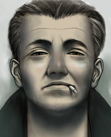
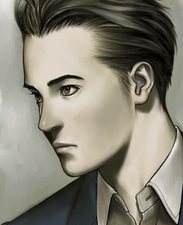
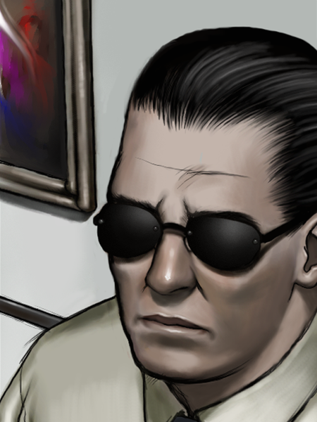
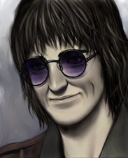
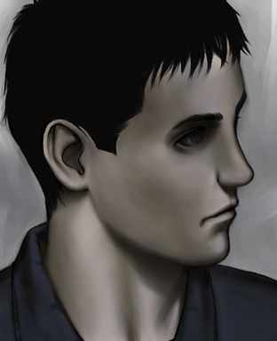

Thanks to the efforts of freelance journalist Tokio Morishima, a few people have been identified
as having a close connection to Kamui's murders both present and past. These people are our only hope of discovering the truth
about Kamui and his true history.

Tetsugoro Kusabi
The man who arrested Kamui in 1979. Currently working as part of the Heinous Crimes Unit in Unit 2
with his partner Sumio Kodai. Is hard to approach, but may divulge information under the right circumstances.

Sumio Kodai
Works with Tetsugoro Kusabi on all investigations. Like Tetsugoro, he may divulge information in the right
circumstances. Appears to be hard of hearing.

Shinji Kotobuki
Chief Director and founding member of the Heinous Crimes Unit. Is believed to have been involved in the case that
eventually led to Kamui's arrest in 1979. Provides support for the investigators in the current Kamui case.

Morikawa Kiyoshi
Founding member of the Heinous Crimes Unit. Is believed to secretely file reports containing information about
Kamui's past. Seems to be in a relationship with Mayor Kaoru Hachisuka's daughter, Chizuru Hachisuka.

"Akira"
A man shrouded in mystery who is believed to be using an alias. Nothing is known about his past, but he has consistently
appeared alongside Tetsugoro Kusabi and Sumio Kodai, as well as other members of the Heinous Crimes Unit in their investigations.
Some believe that he holds the closest relation to Kamui out of any investigator.